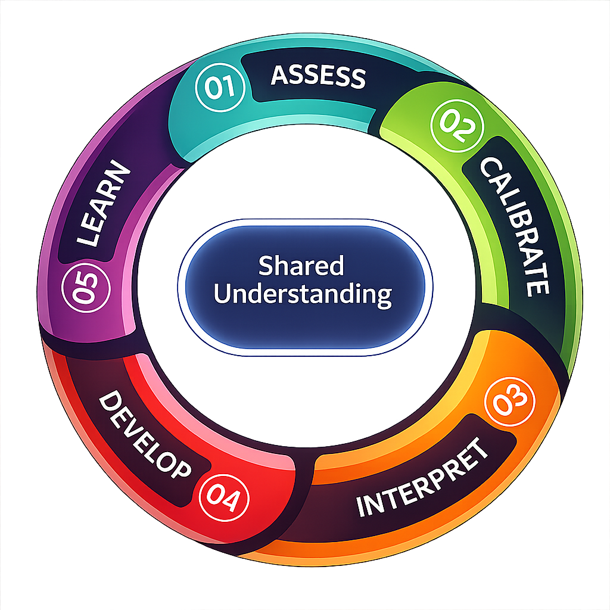

Max supports athletic development —
with clarity, fairness, and purpose.
A trusted approach that brings consistency and understanding to
assessing, supporting, and developing athletes at all levels of play.
See Who Max Is Built For
One system. Many perspectives.
For Athletes
Athletes want to feel seen — not just ranked. They care about knowing what they do well, what matters most right now, and how today's effort connects to tomorrow's progress.
Max supports athletes by making feedback clearer, more consistent, and easier to understand — so development feels intentional, not confusing or random.
- Strengths and growth areas are easier to recognize
- Development feels purposeful, not abstract
- Confidence comes from understanding progress
For Parents
Parents care about fairness, clarity, and trust. They want confidence that decisions are thoughtful — not arbitrary — and that their child is being evaluated consistently.
Max helps parents make sense of evaluations by providing clear explanations and a shared understanding that supports calmer, more productive conversations.
- Evaluations feel more transparent
- Conversations are easier to interpret
- Trust in the process increases
For Coaches
Coaches are expected to turn evaluation into action — while managing time, expectations, and scrutiny. They care about clear priorities and practical guidance they can actually use.
Max supports coaches by translating evaluation into focused insight, helping them spend less time defending decisions and more time developing athletes.
- Development priorities are clearer
- Decisions are easier to explain
- Time is spent coaching, not justifying
For Evaluators
Evaluators care about doing their job well. They want clarity on what matters, confidence that they're assessing consistently, and reassurance that outcomes don't hinge on any single viewpoint.
Max treats evaluators as participants in the system — supporting alignment, calibration, and fairness so judgment is shared, not isolated.
- Expectations are clearer
- Bias is easier to identify and manage
- Assessments feel fairer and more defensible
For Associations
Associations care about credibility, consistency, and trust — across evaluators, teams, and seasons. They need decisions that hold up under scrutiny and processes that reduce conflict.
Max supports organizations at a system level, helping deliver smoother tryouts, defensible outcomes, and long-term confidence in how decisions are made.
- Consistency improves across sessions and evaluators
- Disputes and friction are reduced
- Governance and reputation are strengthened
The Max Development Cycle
Fuelling Athletic Achievement at Every Stage of the Game
